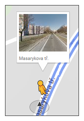
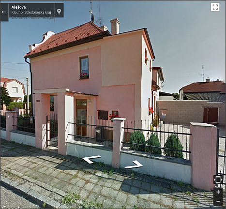

Ikona Street View - funkcionalita map Googlu, která slouží k možnosti prohlédnout si vybranou oblast ve 3D zobrazení.
Ikona Street View - funkcionalita map Googlu, která slouží k možnosti prohlédnout si vybranou oblast ve 3D zobrazení.
Jakmile uživatel prstem podrží ikonku, panáček se nahne a uživatel jej může přetáhnout na mapu na požadované místo. Na mapě se objeví modrou barvou zvýrazněné komunikace, které identifikují místa, kde je naskenovaná 3D trasa.

Jakmile je panáček puštěn v místě, kde je zakreslena modrá čára, pak se na obrazovce objeví fotografie místa a je možné se po fotografii posouvat pomocí navigačních značek.
